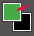

photoshop常用图片处理技巧
photoshop是一款优秀的图像处理软件，作为前端开发工程师，掌握它的一些常用功能是必须的。photoshop的常用功能有：选择、裁剪图像、修图、取色、插入文字等等。除了这些常用功能，前端还需要掌握制作新图像、切图等技巧。本次讲解的photoshop版本为cs6。
图片格式转换与压缩
1、文件/存储为 选择图片类型以及压缩比；（不推荐）
2、文件/存储为web所用格式 选择图片类型以及压缩比 （推荐）；
图像放缩，平移
1、 放缩工具 图像放大缩小，在图像上点击放大，按住alt键点击缩小，快捷键Ctrl+“+”放大 Ctrl+“-”缩小，双击此工具可以让图像按照原始大小显示。
2、 平移工具 对图像进行移动，在使用其他工具时，按住空格键盘的空格键，可以切换到此工具，移动完后松开空格键回到原来的工具。双击此工具可以让图像放缩到显示区域完全显示。
平移工具 对图像进行移动，在使用其他工具时，按住空格键盘的空格键，可以切换到此工具，移动完后松开空格键回到原来的工具。双击此工具可以让图像放缩到显示区域完全显示。
新建图像
执行菜单命令 文件/新建 可以新建一张图片，设置大小，颜色模式选RGB，网页图片一般选择72像素/英寸，如果图像要打印，可设为300/英寸。背景按情况选透明或白色。
移动选择与图层面板
1、按住Ctrl，在图像上点击可以选中图层
2、 选择此工具，勾选工具属性栏上的“自动选择图层”，可以在图像上点击选中图层
选择此工具，勾选工具属性栏上的“自动选择图层”，可以在图像上点击选中图层
3、移动元素同时按住Alt键可复制一个图层
4、图层面板的操作，包括图层的显示隐藏、图层顺序、新建图层、图层删除
针对图像中选中图层的操作
1、移动
2、自由变换 执行菜单命令 编辑/自由变换
3、拖拽到另一张图像上完成图层拷贝
历史记录面板
记录20部操作，可以点击已经记录的操作步骤回到之前
选择工具
1、 矩形选择工具
矩形选择工具
2、 椭圆选择工具 按住alt+shift键可以从中心拉出正圆
3、 任意套索工具 用手任意画出选区，不精确，不常用
4、 多边形套索 可以选择多边形物体，对于结构复杂的物体，可以点多个小段来选择。
多边形套索 可以选择多边形物体，对于结构复杂的物体，可以点多个小段来选择。
5、 磁性套索 可以自动在物体边缘生成选择线，但是由于太自动了，所以不够精确，也不常用。
6、 魔术棒选择工具 按照点击的点的颜色范围来选择，可以设置范围的容差，容差越大，选择区域越大，对于有单色背景的图像中的元素，可以用它点选背景，然后反选，从而选中元素。
7、 快速选择工具 直接在要选的元素上画，按照画的颜色范围进行选择。
8、对图层创建选区：按住Ctrl，用鼠标点击图层面板中图层的图标，在图层外框生成选区。
选区的编辑技巧
1、新选区模式下移动选区
2、选区的加、减、乘，工具属性栏上设置
3、调整边缘 工具属性栏或者执行菜单命令 选择/调整边缘
4、变换选区 执行菜单命令 选择/变换选区，可对选区进行缩放、移动等
5、反选 执行菜单命令 选择/反向
6、取消选择 执行菜单命令 选择/取消选择，快捷键ctrl+d
选区特别注意
选区（蚂蚁线）只对当前图层器起作用，选区操作失败一般是当前图层弄错了
裁剪图像
1、 裁切工具
2、对选区执行菜单命令 图像/裁剪
3、设置矩形框大小，创建固定宽高的矩形框，可进行固定尺寸裁剪
针对确定选区的操作技巧
1、复制 执行菜单命令 编辑/拷贝 快捷键ctrl+c
2、粘贴 执行菜单命令 编辑/粘贴 快捷键ctrl+v
3、填充 执行菜单命令 编辑/填充
4、描边 执行菜单命令 编辑/描边
5、删除 执行菜单命令 编辑/清除 快捷键 delete
6、自由变换 执行菜单命令 编辑/自由变换 快捷键 ctrl+t
擦除与修复工具
1、 擦除工具
擦除工具
2、 污点修复工具
参考线技巧
1、视图/标尺，显示标尺，在标尺上按住鼠标拖动可以拉出参考线
2、视图/对齐到/参考线 让参考线移动时自动对齐到选框或者图像的边缘
3、视图/新建参考线 可以精确创建参考线
文本输入
1、执行菜单命令 编辑/首选项/单位和标尺 设置文字的单位
2、 文本输入
3、文本编辑 属性工具栏上点击文本编辑按钮
取色
1、取色工具，点击前景色按钮，弹出取色对话框，当前工具切换成取色工具。
2、点击前景色按钮，当前工具自动切换到取色工具
图像大小与画布大小
1、图像/图像大小 查看和设置图像的整体大小
2、图像/画布大小 查看和设置图像的画板大小
尺寸测量
1、 切片工具 双击切片弹出切片对话框
2、 切片选择工具
2、 矩形框工具，打开信息面板
矩形框工具，打开信息面板